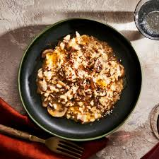

Miso Instant Pot Risotto

This recipe is for a vegetarian Risotto using Miso paste and mushrooms, cooked in an Instant Pot. It is ready in less than 30 minutes and is great for batch cooking.
Ingredients
The ingredients for the recipe are:
- Risotto Rice (3/4 Cup)
- Miso Paste (1 tbsp)
- Shiitake Mushrooms)
- Edamame Beans
Steps
- Roast risotto on saute mode
- All all ingredients to the pressure cooker
- Cook on high pressure for 8 minutes